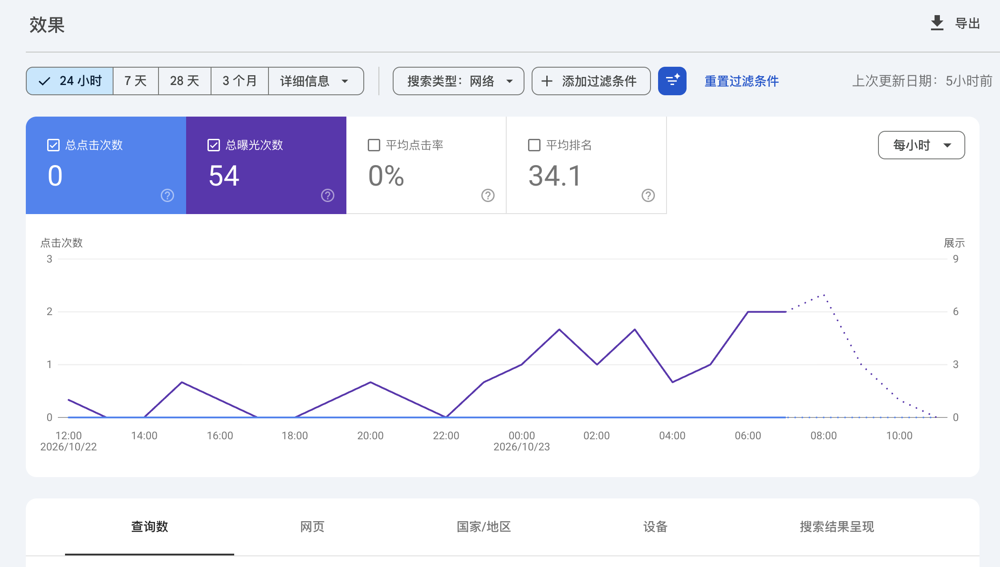
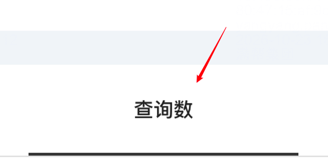
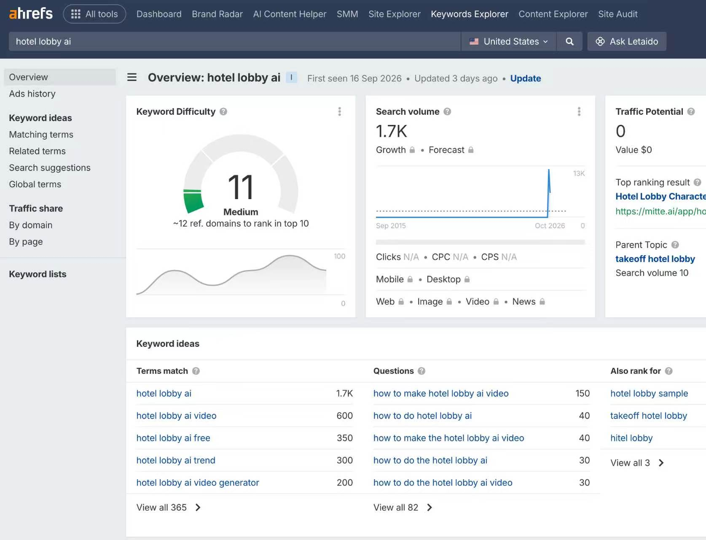

新词机会的核心不是比大站更会用 SEO 工具，而是进入它们暂时看不见的时间窗：新词刚出现时，Ahrefs 等平台还没有稳定搜索量，等到 Google Trends 出现明显热度，趋势往往已经扩圈数日。小站的机会来自更早去源头平台发现异常信号，再用搜索数据验证。
先区分：出词、收录与有搜索量不是一回事
聊天里用 GSC 截图询问“这是不是出词”。截图显示的是过去 24 小时总览：0 次点击、54 次曝光、平均排名 34.1。这能证明页面已经获得少量曝光，但截图本身还没有展开具体查询词。

群友随后指出，具体词要进入“查询数”页签查看。也就是说，看到 GSC 有曝光只是第一步；确认页面开始匹配哪些搜索词，才是这里讨论的“出词”。它不等于已经有可观搜索量，也不等于能带来点击。

工具看得到的词，通常已经不再是第一波
哥飞给出的判断是：大多数大站 SEO 团队更愿意做确定性高的事情，也高度依赖 Ahrefs 等第三方工具。全新关键词刚出现时不会出现在工具里，或者即使之后出现，搜索量也小到不值得注意；依赖工具选词的人因此会暂时变成“睁眼瞎”。

这张 Ahrefs 截图展示的是一个关键词成熟到已被工具记录后的样子：有搜索量、关键词难度和关联词。它不能说明这个词刚出现时工具就已经捕捉到。工具能确认需求规模，但也可能只在你看到时告诉你“已经有人先做了”。
Google Trends 变热，说明趋势已经扩圈
当一个词开始在 Google Trends 有热度，说明它已经从最早的小范围讨论扩散到更大的搜索人群；从最初出现到 Trends 明显抬头，可能已经过去几天。此时再开始找站、做内容，速度通常慢于更早刷源头平台的人。
第一波需求要去源头平台找
哥飞给的方向是“源头在哪里，就去刷哪里”，例如 X、TikTok、YouTube、Instagram 等内容平台。群里进一步讨论：第一波信号常常表现为互动量或增长速度异常的内容，而不是第三方 SEO 工具里已经形成的关键词表。
- 观察同一主题是否在短时间内出现异常高的互动、播放或转发增长。
- 看评论区和提问区是否反复出现同一个未被满足的需求。
- 看同一主题是否开始出现视频、工具、网页等多种内容变体。
- 把 Google Trends 当作“趋势已经扩圈”的确认，而不是第一波首发信号。
新词不是盲赌，但仍要承担判断错误
群友也给出了反例：有些趋势爆发得快、消失得也快，站点还没形成结果，需求已经退潮；Thor 提到自己判断错了三个词。因此，早发现只解决“比别人更早看到”，并不保证每一个词都能持续。
一套可复用的检查顺序
- 先在源头社媒寻找异常信号，记录首次出现时间和原始讨论。
- 确认用户提出的问题是否具体，是否对应可搜索的实体或需求。
- 到 GSC 查询数中确认页面是否开始匹配真实查询词，而不是只看总曝光。
- 再用 Google Trends 判断是否扩圈，并用 Ahrefs 等工具确认是否已进入大众工具视野。
- 评估需求可能持续多久，再决定是否值得投入域名、站点和内容。